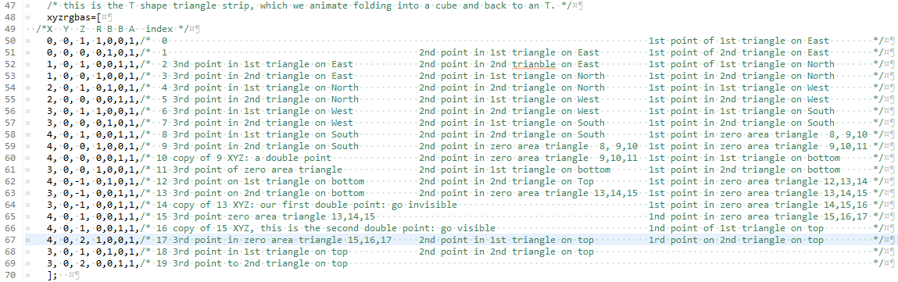
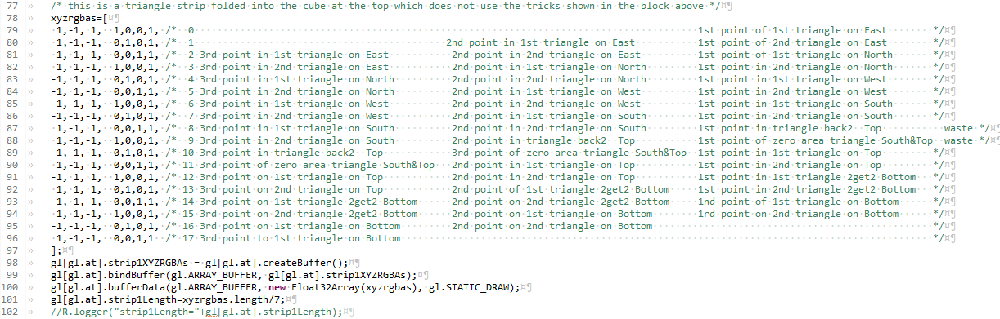
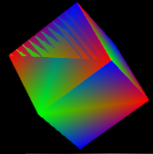

Contents |
Welcome to the fifth in my series of WebGL Tutorials. These tutorials are based on the well known Learning WebGL series, with this fifth tutorial being based on the WebGL Lesson5. It shows you how to add animation to the shapes we learned to color on a web page in tutorial02. This and the following tutorials will go over only the things which are new to that tutorial. Animation is the thing added in this tutorial
These tutorials are a best match with people who have a reasonable amount of programming experience, but no prior exposure to computer graphics is required. The goal is to get you up and running a working 3D interactive web page as quickly as possible, with a good understanding of what is going on. Writing these tutorials is how I'm learning WebGL myself, so there may well be (and probably are) errors; use at your own risk. However, I'll be fixing bugs and correcting misconceptions when I hear about them, so if you see anything wrong, please let me know in the comments.
This tutorial graduates to real 3D objects.
The arrays of vertices expand from our previous 4 to now have 18 and even 25 vertices.
We explore a couple of ways a triangle strip can be manipulated. We bend one of these triangle strips to cover a rectangular area.
We also bend one into an T shape and animate folding it into a cube. We make another triangle strip into a cube, and in doing so, I commit a webGL error
you should know about, so that you can avoid it. We spin this cube so that the error has it's best chance of being visible.
Then I show a little more
of the attitude which prompted the first lesson to have the cullface options. A minor aspect of this is that I made all the objects in the left canvas
"correct" with regard to which way was cullface front. If you click the cullface button under the left canvas, nothing seems to happen. Things are
a little different on the right canvas.
The real core of the "set things up so that we can draw just as well with fewer triangles" are the two
seemingly identical objects. These seem to be two rotating cubes with each
face having a single color. The pair of objects look identical
in the left canvas, but there is something a little odd about one of them visible in the right canvas. The left canvas, left object IS a cube... it
has all six sides. The left canvas, right object is not a cube. It is only ever has 3 faces.
The cyan blue thing on the bottom IS a cube, even though it does not look much like one. It was included as an object lesson in "why colors alone... is not good enough" to do the kind of drawing we all want to do. To look good enough we'll need lighting and shading. Without lighting and shading, the 6 sides of the cube all look identical, so your eyes have no clues to see any face of the cube as being different from another face. Lighting and shading are kind of a big step, and there is quite enough allready in this tutorial. We'll delay shading and lighting till tutorial05.
This tutorial04 does cover one of the tricky bits about getting vertices and their attributes into useable arrays. The standard, one after another, way we have used so far can be less efficient than another setup when multiple faces of an object share vertices, like the 8 corner points of a cube. We can set up an array of the 8 points, and an array of indices of these points to make our triangle strips. I know. It was not intuitive to me either, the first couple of times I started in on it in the webGLLessons. Hopefully these tutorials allow this admittidely difficult concept to be shared.
The shaders are unchanged from webGLTutorial02.
As usual, the URL to servlet to .jsp to .js to webGLStart function begins with the usual gl-aux2.js function initGL. This is, as ever, unchanged from
previous versions, that what a library function is supposed to be. We again reuse the mimimalist customizatoins (nothing fancy or new) and shader
initialization (same shader so same shader initialization).
Line 6 is a new variable, it is one of a set I'll attach to the gl[], a pair for
each tutorial. They will be of aid when the tutorialXX canvases are called in the WebGLTutorials
The variables attached to the gl[] to avoid having globals have the same purpose as in tutorial03. THhy keep track of the parameters for the different shapes and are clusterd here for more easy poking, running, poking running iterations. I commented them in the code instead of including explanations here. The buffers we will load and their contents are quite different, so we need a new initBuffers04(). We'll dive into that after peeking a bit forward to see that the usual sequence is unaltered. drawScene and update the xyzpry. I do not show the second half of the wegGLStrt04() function, which is just a repeat for the right canvas.
And on into the buffers. Setting up XYZ co-ordinates to make the shapes you want is a key part of making wegGL programs. The buffers we've
filled previously have been pretty simple, with just enough content to have something to work with. This tutorial is where you will be exposed
to some of techniques of arranging XYZ points into seemingly 3D shapes.
webGLTutorial04js... initBuffers04()

We begin with the thing which looks like a T that has fallen over onto it's right side. We use this shape twice in each canvas, once as a static
shape, and we also use it as our template to show a little more complicated interaction between translates and rotates. We fold it into a cube.
We start, as always, at point 0, which is even, so we want our first triangle to be CounterClockWize (CCW). We continue with our imagry of having the points painted on a glass wall which runs east west, and we are viewing the wall, from the south: same as the left canvas. We arrange for this first CCW triangle by having the point 0 be a bit up, with point 1 below it. Point 2 in then up and to the right ( pictogramed as / ). This gives each odd numbered point below the prior even numbered point. We continue this as long as we need: to make a cube we'll need 5 sets of vertical pairs to form 4 squares. Each square has it's diagonal /
webGLTutorial04js... the layout
This makes point 9 as the end of our run. Instead of proceeding further to the right, we want to go down.
So we put a second copy of 9's XYZ as point 10, we make the 8,9,10 triangle be along the line from 8 to 9, and so it has zero area.
Zero area triangles are invisible.
We need to decide if the bit hanging down will have the two triangles have their common side be \ or /.
Point 10 is even, and all our "starts with even" triangles are CCW. If we go from 10 back to
the location of 7 (to be point 11) then along the \ to point 12 ,we'll make our first triangle CCW, and be able to complete our second triangle with another
point down and to the left as point 13.
Now we're going to want to go invisible again, so we put a second point at the XYZ location of 13 (to be point 14). We're going to want to pop up again visible at either the location of point 6 or point 8. The next point (15) will be odd, and all our "starts with odd" triangles are ClockWize. If we put 15 on top of 6, we can go clockwize to have point 16 on the top of the \ diagonal, with 17 at the bottom. Point 18 then becomes our upper-most right point on the T.
Oh Crap. There is a problem with this. I did not see it myself until mapping out the triangles in the comment block on the vertices. The problem is that triangle 14,15,16 will not be zero area. In the present exercize, it would always be inside the cube, but it would still sometimes be visible from some directions as the flat T folds into a cube.
So when we go invisible and want to pop up visible somewhere else we go with a two pairs of XYZ coincident points. This puts us at point 16, an even point, so we need our shared diagonal with the first and second top side triangles bo be CounterClockWize. So 17 becomes the upper right at the top of / with 18 at the bottom and 19 directly above 18.
This allows us to draw separate shapes with a single triangle strip. This represents a considerable savings in that the processing of the strip is within the GPU. The function calls to get multiple smaller triangle strips would be in the much slower javascript. This savings is WAY worth processing a couple extra points. The vertex shader will quickly figure out these give zero area triangles, and stop processing them.
And now that we've expanded your degrees of freedom on working with triangle_strips, I would like to again offer as food for thought: M C Escher's Rind
now on to our second buffer, named strip1
webGLTutorial04js... initBuffers04()

This is the big cube at the middle top of the display. The triangle strip used to make this cube did not use the trick shared in the section above.
The layout of the triangle strip causes some of the triangles to have areas which are in the same planes, with overlapping areas.
The result for the viewer can be something
like
 the top half of the leftmost cube-side in this image.
The extent and shape of the
overlaps depend on the viewing angle and the hardware used to execute the shaders. What is happening is that one of the triangles gets to the shader's output
buffer first. Because we have enabled the depth buffer, the shader will try to determine if each point in the new triangle is in front of the first triangle (and should be shown)
or is behind (and should be hidden).
The problem is that almost all floating point numbers are approximations, because of the finite lingth of the memory locations. As the guts of the fragment shader calculate the 3 dimentional location of each pixel which could show in our second triangle, these roundoff errors and approximation effects give slightly different results for inputs which should, theoretically, be identical. As you will remember from our shader programs, these calculations are nothing we do. This is the work of the folks who designed the GPU silicon layout. The upshot is that the effect becomes more prominant, or goes away entirely with small changes in either object or view position/orientation. It can also look quite different on various display devices, think gamer workstation vs cell phone. Now that you know what to look for, you'll be able to diagnose when you've committed this error. Using the trick in the previous section, fixing it should be within your capabilities. Our job as webGL artists is to set up our arrays of XYZ positions so that we minimize the number and size of co-incident areas.
On the other hand, if you like that effect, and want to use it in some portion of your display, you now know how to set it up to occur.
More fun with triangle strips. This is the rectangular area in the upper left of the left canvas. It uses the zero-area-triangle trick, as we serpentine back and forth across our area. I put the point which would be co-incident offset by 0.1 unit, which has the effect of making it a small sliver, visible on the right canvas when you turn on the cullface on that right canvas. Remember the right canvas is looking south, so the sliver is on the upper right side of the canvas.
One thing to note is that the point 3,0,1 occurs twice, as vertex 6 and again as vertex 10. If we had not been trying to highlight the almost zero area triangles, we would have had a third occurance at #8, where we put the 2.9,0.1,1.0 It is quite usual to have a vertex used twice when covering an area with a mesh of triangles.
This is the setup for the middle pair of cubes. Here we will be putting a single color on each face of the cube AND we will be using "select-by-index". To get the colors right, we observe that a cube has 8 corners and that each corner is shared among 3 faces. This separation shows up better with the blank lines between the three colors for each point. One of the advantages of the select-by-index technique is that we do not need to order the vertices according to any pattern of which vertices are near each other. Our primary goal in setting up the vertex array is to have the vertices in a pattern we can easily remember, so that when we want to call out the index of a particular vertex, we can figure it out. I cut and folded a piece of paper into a cube and numbered the corners.
The blue shape at the bottom of the canvas's is made with a similar set of select-by-index XYZ RGBA inputs. This second block of 8 separate vertices is identical on the XYZ side, but all the colors are the same single blue color.
The select-by-index XYZ RGBA's buffers are loaded the same way that the regular buffers are.
The numbers in this array will end up causing the vertex shader to act the same way as our previous shape drawings... the vertex passed to it first, second, and third will form the first triangle, and if we are in trinagle-strip mode, the next vertex passed in will cause the 2nd triangle to be formed among the second, third, and fourth vertex. What is different about the select-by-index method is that we feed it the indices of the vertertices, not the vertices themselves. This saves space (and therefore time) because an index is a single number, not the 7 we use in this tutorial (XYZRGBA). Remember that in meshes which cover areas, each vertex is used as part of multiple triangles. An example of this is the
The buffer loading has the same steps for the index, but there are two differences. Line 221 shows the buffer as an ELEMENT_ARRAY_BUFFER, whereas the previous buffers were ARRAY_BUFFER's. The other difference in this same line is that the XYZ RBGA were stored as a Float32Arrawy, the indices use an Uint16Array. An unsigned Int, even one 16 bits long, will give us to 2-to-the-16'th (65536 indices (numbered 0 thru 65535 )) indices. For arrays of points bigger than that, we would use Uint32Arry
The other difference is on line 222 where the length of the index array is stored. Each index referrs to one XYZ RGBA, so will have a length of one. We match the indices with the vertex arrays later on, in the drawScene function.
This is the same as the triangle strip used in from tutorial03 for the square. The real work was in setting up the strip and using the trick of putting in the double points, to give zero area triangles to make the turn, or to skip over to another location without a trace.
Each of these shapes are surrounded by a pushMatrix popMatrix pair. This makes placement of each of the shapes independent of the others.
Same thing for the area coverage, If you put the click the cullface button below the right canvas until it says "Disable Cullface" (meaning cullface is enabled), the thin sliver of what we made almost a zero area triangle shows up.
This is the setup for the T shaped triangle strip which folds up into a cube. At line 297, instead of being the usual setuniforms and drawArrays, we pop over to another function we name foldit(). All these next steps in the foldit will act on this single pair of buffers (XYZ and RGBA), and be contained within the same pushMatrix popMatrix pair.
We are looking from the South, at the image above painted on a glass wall which runs East&West. The face which will be left facing south is among points 6,7,8,9. The triangle strip is a bit short, being only the four points on this face. Line 359 shows the strip begins at point 6 and goes on for 4 points.
The bottom or Down face will be swinging about, and we do not want it's motions to be carried over to the next faces to be drawn, so we enclose it within another pushMatrix popMatrix pair. This is the real beauty of the push-pops, they nest within each other, allowig us to make grand motions and then isolate other motions at will.
Line 363 needs some explanation. We want to rotate the bottom face about the X axis, at a height of zero, and a north/south movement of zero. To accomplish the lack of translation along the Z and Y axises, we simply omit any translations. The extreem right of the line is the axis about which the rotation will occur, 1,0,0 being the normalized vector from 0,0,0 to 1 unit along the X axis, and zero units Y and Z.
The middle bit decides which way the bottom face will rotate, and when. We have previously set up a variable cube0Rotation and attached it to the gl[gl.at] graphics library context. In the animation function we initially increment this variable. I chose to match the movements of the faces with a change in the cube0Rotation matching the face rotation in degrees. In this animation function we will set the speed by how much the cube0Rotation variable is incremented with each pass thru the animation... drawScene loop. Both the speed and direction are the product of a goodly number of choose, compile, run,... choose, complile, run ...iterations.
the (90<gl.cube0Rotation?90:gl.cube0Rotation) bit has the effect of having the angle of the face match the cube0Rotation when it is less than 90. For iterations when the cube0Rotation is 90 or greater, the face does not move further, it stays at 90 degrees rotated from it's initial orientation. The conversion of the degrees into the radians that are used by the rotation function are done by the multiplication by deg2rad.
Line 365 again draws a short triangle strip, starting at point 10, and continuing though the four points 10,11,12, and 13.
webGLTutorial04js... foldIt()This next step waits until the bottom face has rotated, and then folds down along a line parallel to the X axis, but moved 1 unit up. The way this offset rotation is accomplished is to move up, rotate, and then move back down, before sending the matricies (modelview and perspective) into the graphics processer (line 376). We do not want the rotation of the top face to affect the 4 vertical faces, so we wrap this section in a pushMatrix popMatrix pair.
We will moving the when the cube0Rotation is between 90 and 180. The effect of the if clause, lines 382 to 385 is that no motion occurs until after the delay in the cube0Rotation till it gets to 90. This delay in rotation movement until 90 is affected by the if clause between lines 371 and 374.
The (180<gl.cube0Rotation?-90:-1*(gl.cube0Rotation-90)) starts the movement at 0 degrees when cube0Rotation is 90. It increments the rotation angle until it has turned by 90 degrees when the cube0Rotation is at 180.
Line 377 draws a short triangle strip starting at point 16 and proceeding for 4 points: 16,17,18, and 19.
webGLTutorial04js... foldIt()We now begin to move the West, North, and East faces. We DO want the motion of the North to be affected by the motion of the West face. We also want the motion of the East face to be affected by the motions of the West and North faces. This type of motion stacking can be used in such circumstances as the movements of the shoulder joint, elbow, wrist, and finger joints when animating a robot or life form. This motion stacking is accomplished by not butting each of the next bends within pushMatrix popMatrix pairs.
The shift, rotate, shift back action, combined with the rotation angle along the Z axis (0,0,1) causes the rotation to occur along points 6 to 7.
The if clause from line 382 to line 385 causes a rotation of 90 degrees beginning when the cube0Rotation reaches 180, completing the rotation when cube0Rotation reaches 270.
Line 388 draws a short tirangle strip starting at point 4, and proceeding for 4 points: 4,5,6, and 7.
webGLTutorial04js... foldIt()This next section rotates around the line between points 4 and 5, with a short triangle strip starting at 2, and proceeding for 4 points: 2,3,4, and 5.
webGLTutorial04js... foldIt()This next section rotates around the line between points 2 and 3, with a short triangle strip starting at 0, and proceeding for 4 points: 0,1,2, and 3.
The big cube at the top of the canvas. Nothing new in the drawScene for this shape, straight copy/paste and namechange to get the variables right.
This is the 1-color-per-face shape, drawn so that it looks like a cube on the right side of the left canvas. On the left canvas it looks pretty good most of the time, but has something not quite right with it. What is going on is that you are looking at three of the the inside faces of a spinning cube. On the right canvas, I find myself doing the pop-in pop-out inversion thing like in the series of inverting cube optical illusions The right canvas is not really what I was trying to show. I was pointing out that when we look at cubical objects (or more correctly rectangular parallelpipeds) there are never more than three sides visible. So maby with a little preperation, you can draw them with only three sides.
This is the left 1-color-per-face cube and the blue blob at the middle bottom. They are both cubes, and I show the drawscene side by side to demo that they are displayed the same. What is being shown here is that the blue thing at the bottom has no differentation between the colors on the differennt faces, and so.. looks like a blob, not a cube. We'll need lighting to be reflected off the different angles of the faces to be able to see something like a mono-chromatic shape look like we want it. But hey... if the world were made out of more things like soccer balls, and fewer things like cars, we would'nt need lighting and materials properties, (or tutorial05 to introduce them).
Drawing 3D shapes was a relatively large step. Setting up arrays of vertices is at the core of all webGL practice, and can be both frustrating and tedious. We took a relatively deep dive in this, our first exposure to 3D shapes. We used several tactics to set up the arrays of vertices, including triangle strip winding, and reference by index.
{kind=link}
{kind=link}